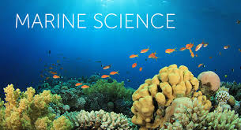

Learn About computer science
Computer science is the study of computation, automation, and information.
Computer science spans theoretical disciplines, such as algorithms,
theory of computation, and information theory, to practical disciplines
including the design and implementation of hardware and software.
Computer science is generally considered an area of academic
research and distinct from computer programming.
Read More
Learn About General science
The House of General Science was originally started by members of the Alpha Chi Sigma (ΑΧΣ)
Chemistry Fraternity in Gibson Hall.
However, they realized that devoting a single floor to chemistry was too narrow,
and could easily attract more members by branching into all sciences.
Read More
Learn About Crop science
Crop Science is the originator of two spin-off journals,
The Plant Genome and the Journal of Plant Registrations. The former was published as a supplement to Crop
Science from 2006-2008, and launched as a separate open access journal later that year.
The Journal of Plant Registrations was established as a separate journal in 2007,
featuring an expanded format for crop registrations describing newly developed plant varieties, parental lines, germplasms, genetic stocks, and populations.
Read More

Learn About fishery science
Fisheries science is the academic discipline of managing and understanding fisheries.It is a multidisciplinary science, which draws on the disciplines of limnology,
oceanography, freshwater biology, marine biology, meteorology, conservation, ecology, population dynamics, economics, statistics, decision analysis, management,
and many others in an attempt to provide an integrated picture of fisheries.
In some cases new disciplines have emerged,
as in the case of bioeconomics and fisheries law.
Read More

Learn About Commerce
Commerce is another word for trade or business, and can mean simply the buying and selling of goods and services. Some commerce involves high finance
and big companies and organisations. Commercial real estate is a place for commerce,
a place to do business. Interstate commerce is the movement of goods,
money or transportation between two or more states.[2] International trade is the exchange of goods and services between countries.
Read More